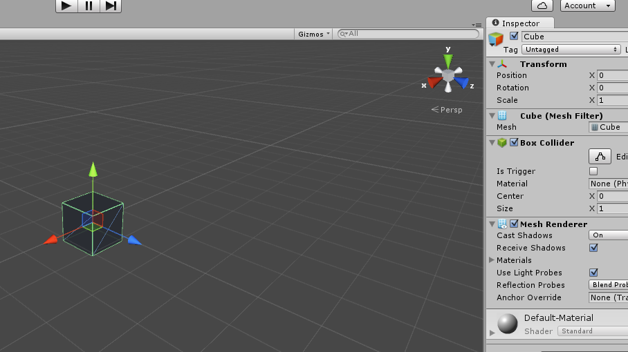

Creating a Sample Cube
Right click under "Main Camera", and select "Create Empty"

This creates a new "GameObject" item under the "Main Camera"
Right click on the newly created "GameObject", and select "Rename"

Rename it to "MyFirstPrefab"

With "MyFirstPrefab" highlighted, we'll want to make sure that the Transform is reset to 0.
Click on the little Gear on the right hand side of the screen, and select "Reset"
Right click on "MyFirstPrefab", and select "Create Empty". Rename the new "GameObject" to "Models"
Right Click on "Models", and select "3D Object", then Cube
With the new Cube highlighted, look over in the Inspector window

Click on the Tag drop down, that says "Untagged".

All Game Objects for 7 Days To Die that need meshes, are required to have a T_Mesh_B tag. If you see the screen above, without the T_Mesh_B, click on "Add Tag..."
You'll need to add these tags if they don't exist:

Click on the + button, and add two new tags, in this order:
Dummy Tag
T_Block
T_Mesh_B

Once done, click on your Cube in the center of the screen to get the Inspector back

Then, click on the Tag drop down again, and select "T_Mesh_B".
Click on the Cube on the Heirarchy.
Then, at the bottom of the screen in the "Project" Tab, expand the "Asset" list, then "Standard Asset", then "Prototype", and finally click on Materials

Drag the colour of which material you want to use. In this example, we are going to use PinkSmooth, as it'll stand out.
Click and hold on the PinkSmooth, and drag unto your Cube game object.

Notice that the colour is now PinkSmooth.
Now, under the Heirachy section, click and hold on "MyFirstPrefab", and drag down to the My assets folder.
Created with the Personal Edition of HelpNDoc: Easy to use tool to create HTML Help files and Help web sites